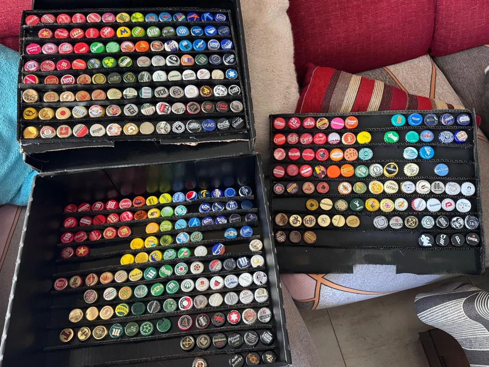

Coleccion privada interactiva
XiniXapas
Una vitrina digital para explorar, filtrar y reorganizar cada chapa como si estuviera en la mesa de coleccion.
Panel de control
Encuentra, compara y recoloca sin perder tu orden.
Racks virtuales
La disposicion se guarda automaticamente.
Activa el modo organizar y arrastra una chapa a otro hueco. Puedes intercambiar posiciones o colocarla en un espacio libre.

Archivo vivo
Preparada para crecer con tu coleccion real.
Los datos viven en data/caps.js y la posicion de trabajo se guarda en el navegador. Cuando quieras publicar un orden definitivo para todo el mundo, exporta el layout y lo dejamos fijado en el repositorio.